Hello - WordPress Theme
Hello is an easily customizable responsive CV/resume/v-card/portfolio theme made with bootstrap 4. Its unique and modern design, easy navigation helps you effortlessly organize and beautifully illustrate your skills, experience and portfolio. It is perfect both for personal and agency portfolio websites. So, whether you are a designer, developer, photographer, lawyer, health professional or a small agency; ‘Hello’ is the theme you need to give your work perfect exposure to your audience.
THEME INSTALL
Before beginning the installation and configuring of your new theme, you must first have WordPress already installed on a server.
If you are struggling, here is a very detailed guide at WordPress Codex that will walk you through every step.
INSTALLING THE THEME
Once you have setup a copy of WordPress, there are two ways you can go about installing the theme:
1. FTP UPLOAD
Unzip the download and upload the theme directory /hello/ into your WordPress themes directory /wp-content/themes/.
2. WORDPRESS UPLOAD
This is definitely the easier route for most. Simply navigate to Appearance > Themes > Add New > Upload Theme. Click the 'browse' button and locate the still zipped theme folder. The theme will be uploaded and installed in a matter of seconds.
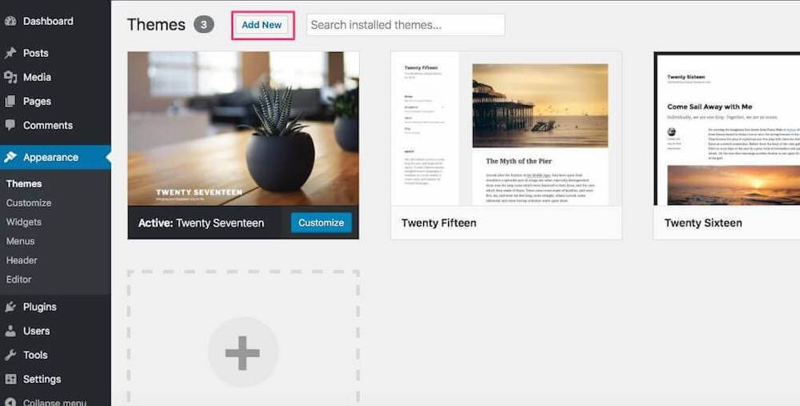
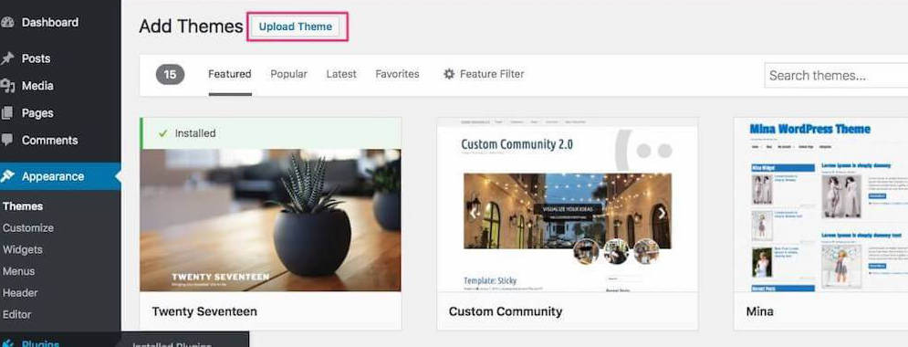
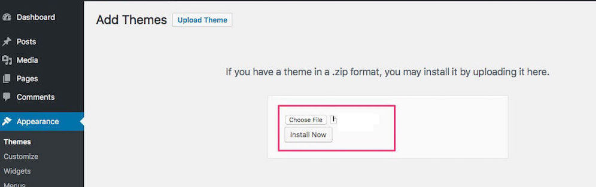
Then you need to activate installed theme.
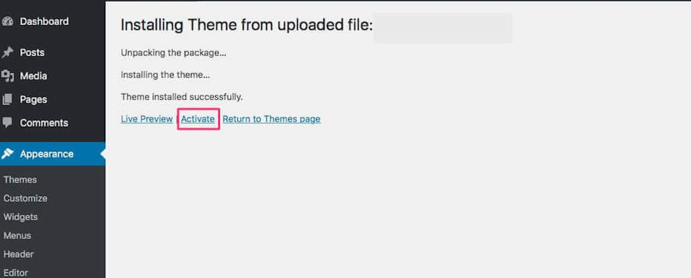
After you have installed the theme successfully, you can optionally import the dummy data in order to get a feel for things. If you're interested in importing the data, please check the Demo Import section below.
REQUIRED PLUGINS INSTALLATION AND ACTIVATION
Once you have installed and activated our theme you will be prompted to install required and recommended plugins. Just click the link Begin installing plugins.
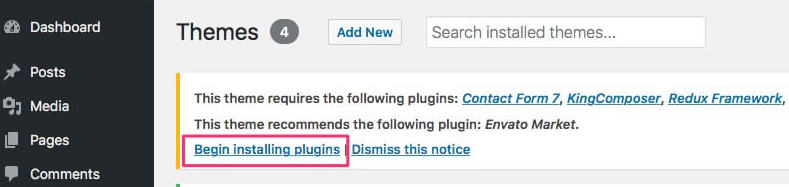
Next, check boxes to select all the plugins you want to install, select the bulk action of install from the dropdown box and then click the button to apply.
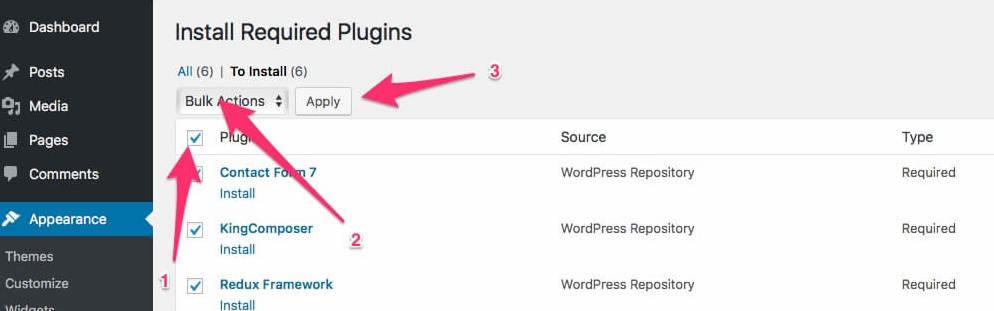
You will got a confirmation notice that your plugins were installed. Finally you need to activate the plugins.
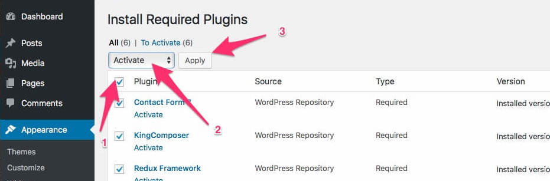
DEMO IMPORT
To help you set up website with the least efforts, we include one click demo importer. After importing, all content seen on the live demo will be imported
RECOMMENDED PHP CONFIGURATION LIMITS ARE AS FOLLOWS:
- max_execution_time 180
- memory_limit 128M
- post_max_size 64M
- upload_max_filesize 64M
please follow the steps below:
1. Go to Theme Options > Demo Importer
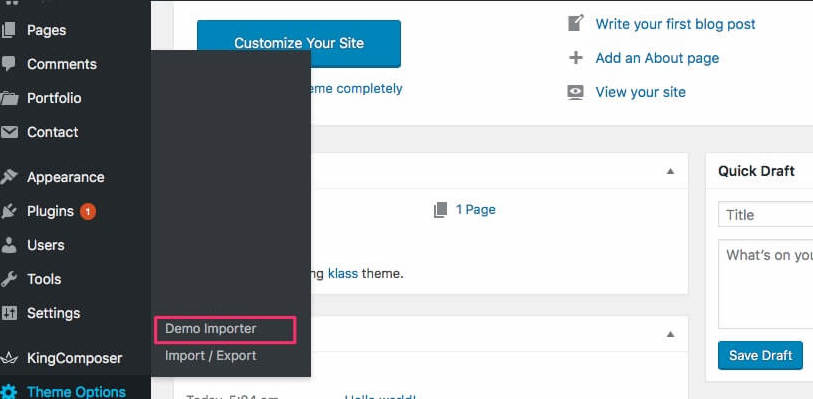
2. Just click Import Demo and wait for the process to complete.
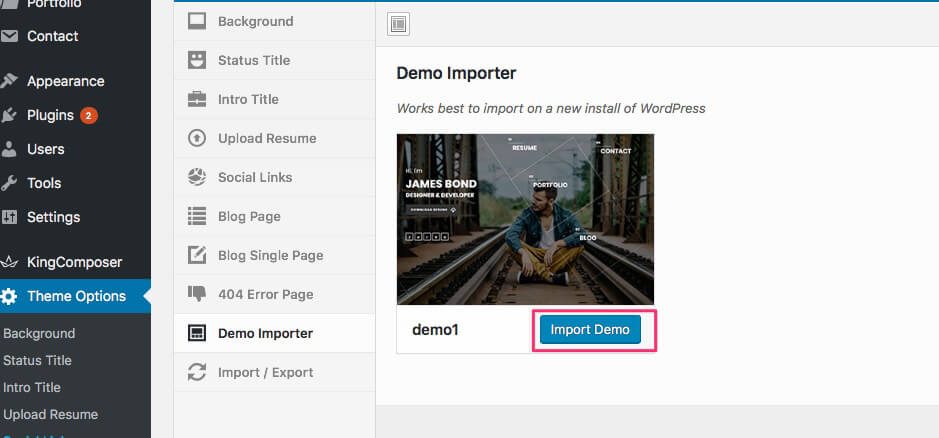
EXTERNAL PLUGINS
GENERAL INFORMATION
First of all, we would like to specify that we do not guarantee the compatibility of our theme with all the third-party plugins for WordPress. Our theme is fully compatible only with the plugins that are included in our theme and also KingComposer, Contact Form 7 and Redux Framework plugin. You often (not always) need to customize the extension to make it work properly with your theme. It's impossible for theme author to make the theme compatible with all existing extensions. Please, take that into your consideration and treat with understanding!
INCLUDED PLUGINS
Hello theme includes a number of perfect third-party plugins that greatly increase the theme opportunities. The following plugins are attached:
As we are not these plugins developers, you may find on their developers' websites all the set up information and documentation for them.
SET STATIC HOME PAGE
If you import demo, dont need this.
Navigate Dashboard > Settings > Reading. From here select static page then for Front page select Home. You can follow below screenshot.
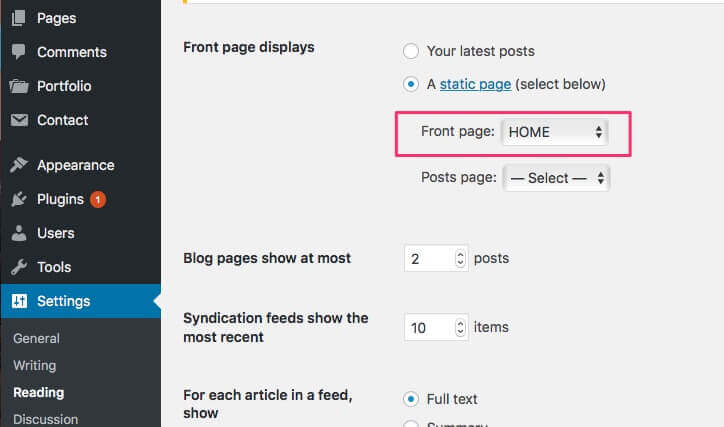
HOME PAGE LAYOUT
- Home Layout - IMAGE, VERTICAL SCROLLING IMAGE, GRADIENT, SLIDER, VIDEO, Go to 'Theme Options > Background'
- Home Layout - TEXT ROTATOR, TYPED TEXT, Go to 'Theme Options > Intro Title > Title 3 Animation'
- Home Layout - SIDEBAR MENU, Go to 'Theme Options > Sidebar Menu'
- Home Layout - INLINE MENU, Set Inline Menu in 'Menu Block' at static front page
THEME OPTIONS
OVERVIEW
Theme options panel will give you access over the appearance of your site, by accepting you to upload your own background, organize your site with your own style like changing button colors, enable sidebar, 404 page details and etc without any kind of coding experience.To access it, navigate the Theme Options section from the WordPress dashboard. you can change -
- Loading Icon
- Upload Logo
- Background
- Status Title
- Intro Title
- Upload Resume
- Sidebar Menu
- Social Links
- Blog Page
- Blog Single Page
- 404 Error Page
- Button Style
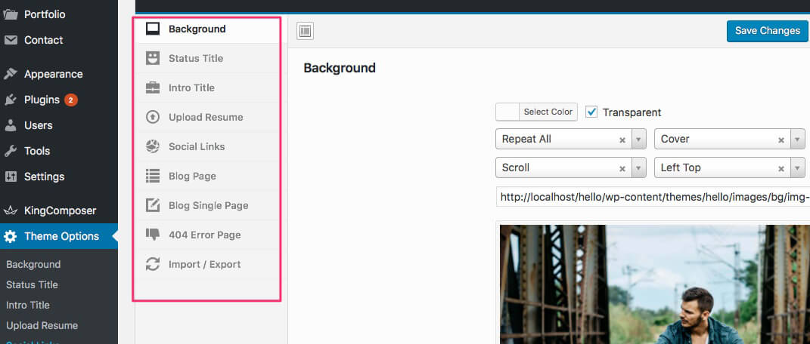
KING COMPOSER – BACKEND EDITOR
KingComposer is the most advanced WordPress page builder plugin. It's lightweight and extremely powerful.
It comes with the theme for giving you lots of flexibility. It provides tons of elements that can be easily added to your page wherever you want. In addition to extending functionalities of existing elements, Hello theme has added 13 additional elements. With these elements you will be able to create your pages very easily.
To start editing with Backend Editor you need to:
- create a page under Pages>Add new tab,
- fill in Title field,
- click on the ‘Edit with KingComposer’ button to activate editor mode.
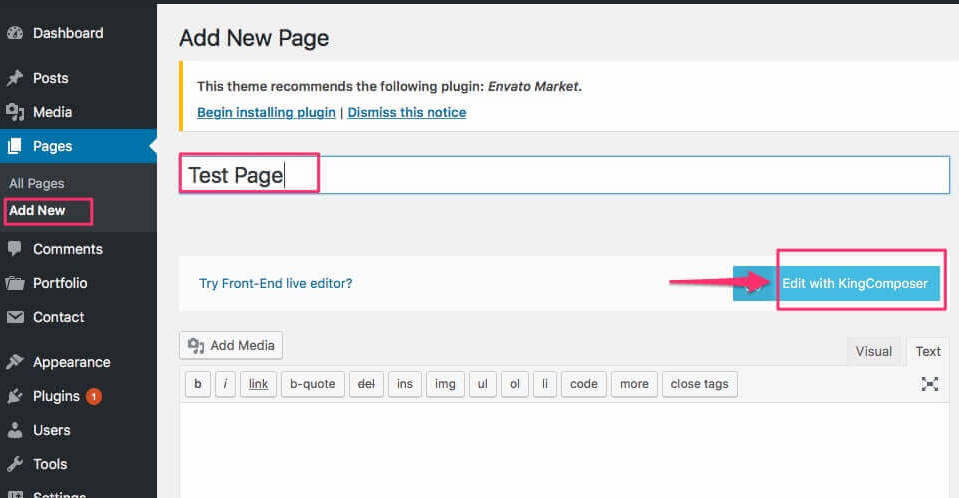
Adding Elements
Start adding elements to your page. You can do it in two ways:
Click on the ‘Elements’ button to add any element from the list.

You can choose column layout for your section first, and then add elements to each column by clicking on the ‘Add Elements’ link or ‘PLUS’ icon.
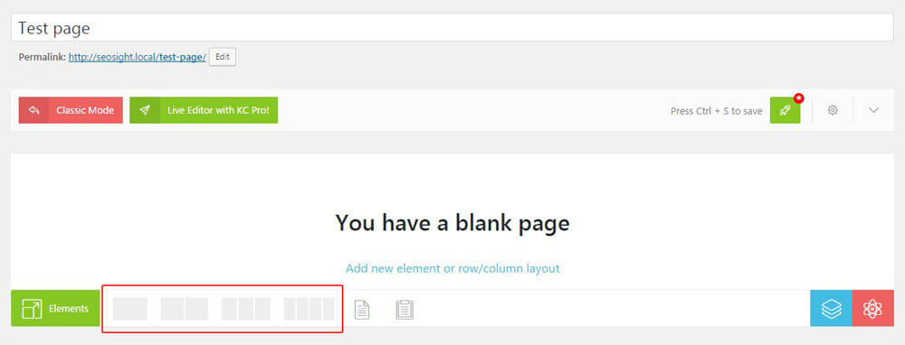
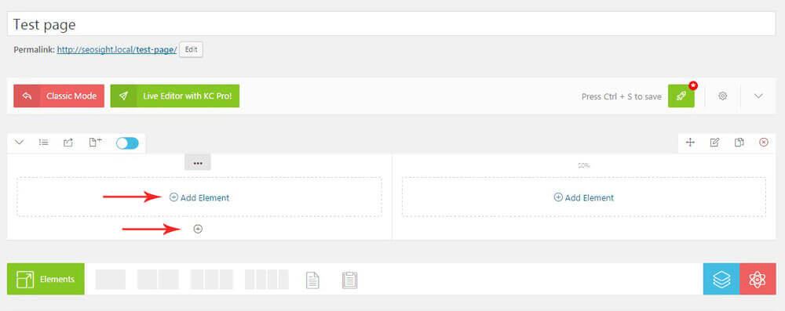
All KC elements are divided in tabs by functionality and have small thumbnails above titles to demonstrate their role in the theme.
Default KC element has a lot of customization option that are also divided into tabs:
‘General’ tab – you can add content and configure main settings of the element.
‘Styling’ tab – allows you to customize design of your element – colors, font size nad font family, background color/images, paddings, margins, borders etc. Styling options are different for each element.
‘Animation’ tab – you can enable animation and choose animation type for particular element.
‘Presets’ tab- this option lets you save settings of the module and use them in another section or page.
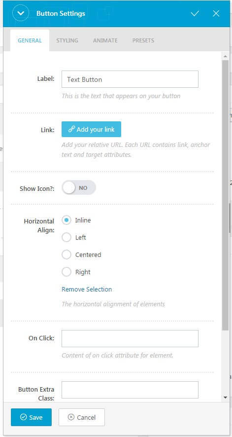
Row Settings
Each section has a number of options that you can customize the way you want. Click on the ‘PENCIL’ icon on the top right corner of the section box to open row settings.

The row settings are:
‘General’ tab – here you can adjust:
– dimentions of the row and columns
– set Youtube video or Parallax image background
– add row ID and extra class names for the row and container
‘Styling’ tab:
– Typography options
– Background options
– Box options – margins,paddings, borders of the row.
– Custom – here you can add custom CSS codes that will be applied to the current row.
‘Animation’ tab – you can enable animation effect, animation speed and delay for the current row.
‘Presets’ tab – this option lets you save settings of the row and apply them in other rows on the current or other pages.
Section Management
There is number of options allowing to manage sections on page according your needs. They are:
Columns number or Custom columns width
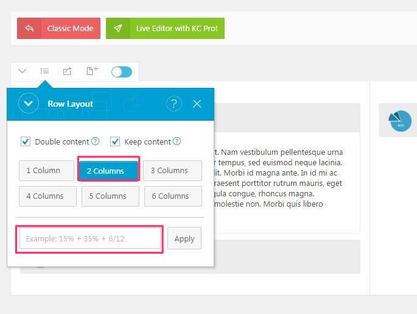
Rows reorder
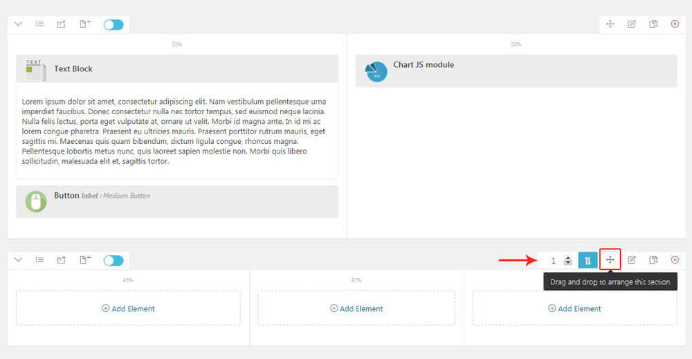
Publish/unpublish rows
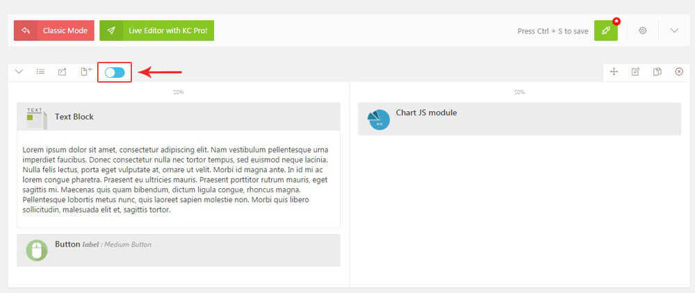
CONTACT FORM SETUP
Navigate to Contact > Contact Form and select Hello Contact form
Set Your email address
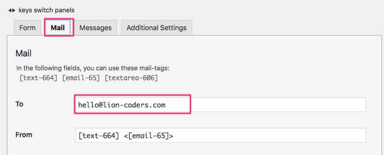
Go to the page. Set hello element "Contact Block" on your desired section.
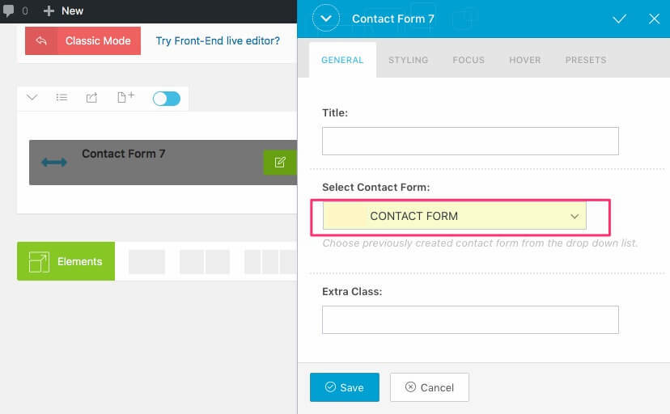
TRANSLATION
PO/MO THEME TRANSLATION
You can translate theme directly using PO/MO language files. You need Poedit software for this.
- Open hello/languages/hello.pot in Poedit
- Click Create new translation button
- Choose your Translation language
- Find String that need to be transated
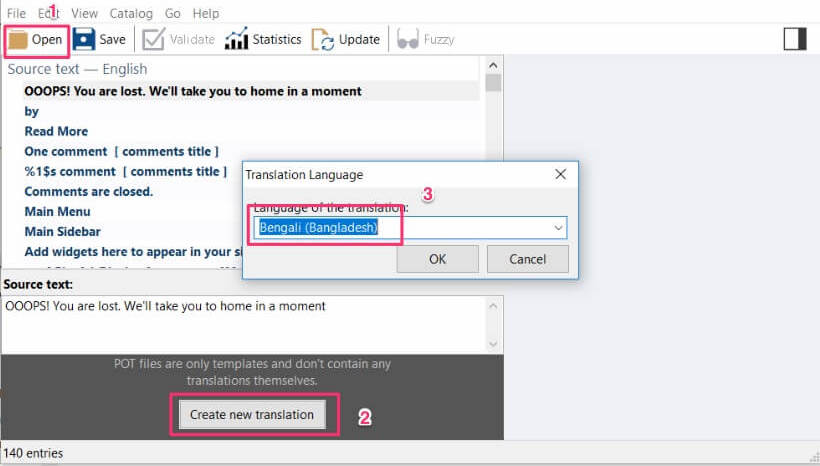
- Type your translation in Translation field
- Click on Save Button an Poedit will create two files in same location: *.po and *.mo
- Now you need to upload these two files in same directory on your remote hosting. After all you'll get nice translated string.
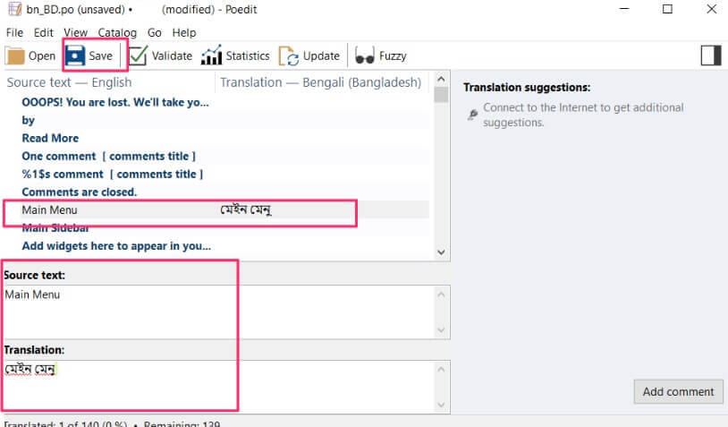
VIDEO TUTORIAL
SUPPORT
Thanks a lot for using this amazing theme. Hope you found this documentation helpful for using this theme. Please support this product by giving your ratings and testimonial.
With best wishes - LionCoders